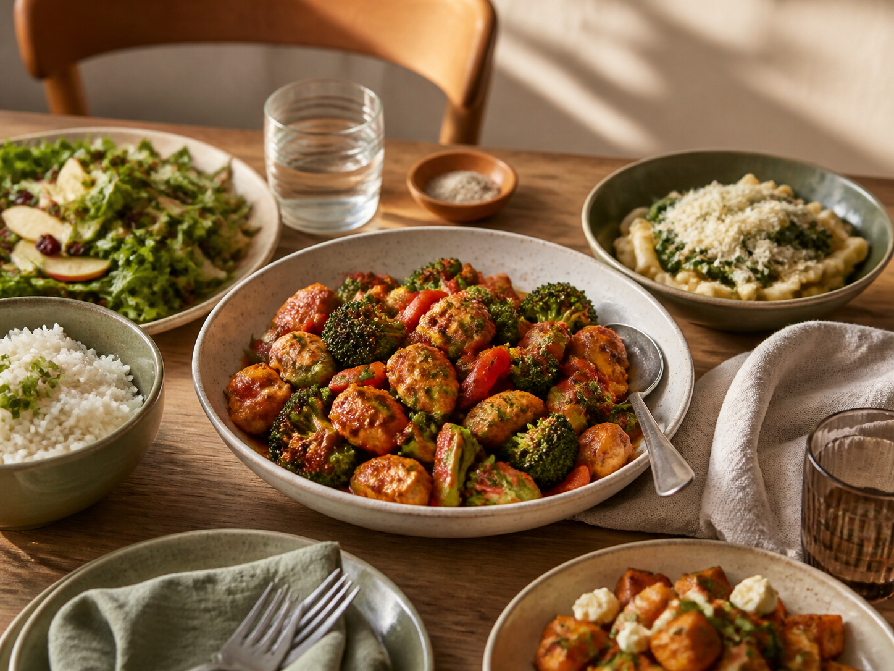
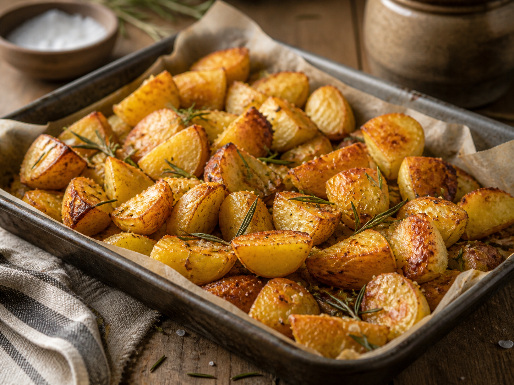
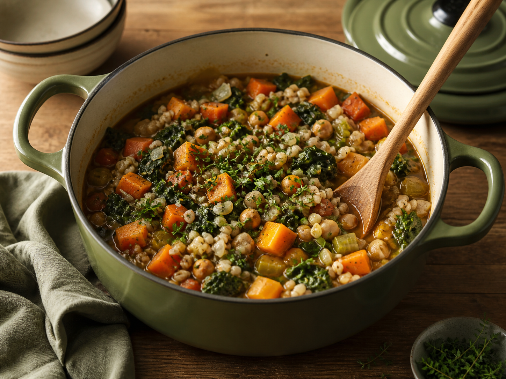
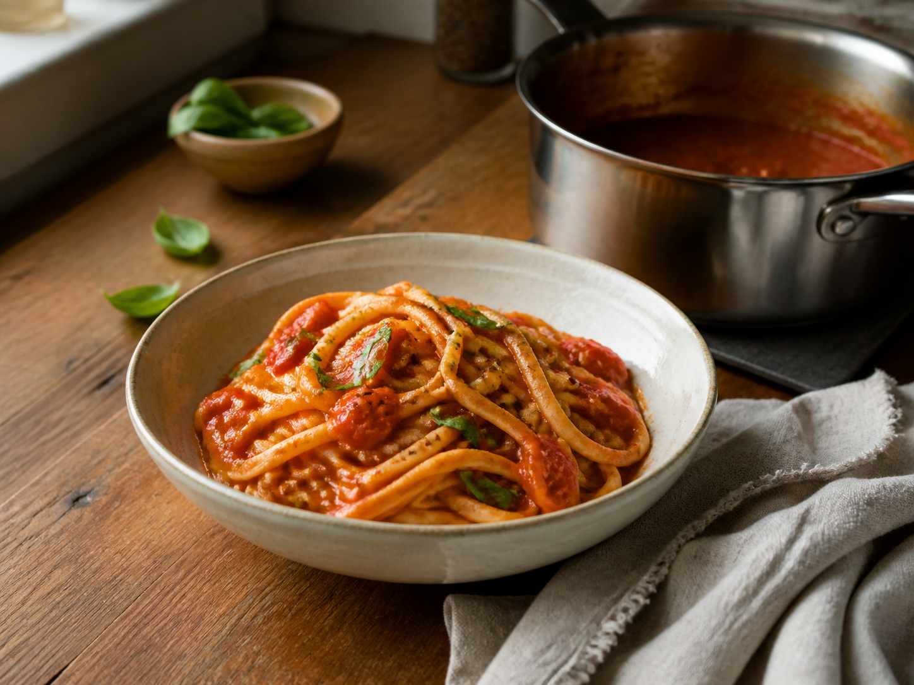
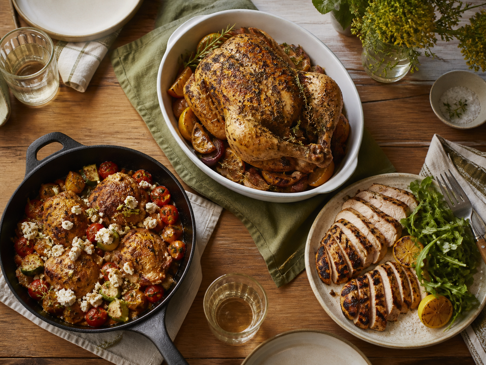

Recipes10 Easy Weeknight Dinners You Can Make in Under 30 Minutes
A practical collection of quick, satisfying meals for nights when time is short.

Morning meals reveal how climate, work, history, and habit meet at the table.
Read More →
RecipesA practical collection of quick, satisfying meals for nights when time is short.

RecipesThe simple choices that create deeply golden edges and fluffy centers.

RecipesComforting dinners with fewer dishes and plenty of flavor.

RecipesA bright, dependable sauce built from pantry staples.
 Cooking Tips
Cooking TipsA short pause can make the difference between juicy meat and a dry plate.
 Cooking Tips
Cooking TipsSmart storage habits that protect texture, flavor, and your grocery budget.
 Cooking Tips
Cooking TipsKeep aromatics lively by managing light, heat, moisture, and time.
 Cooking Tips
Cooking TipsCommon kitchen habits that are easy to recognize and even easier to fix.
 Food & Ingredients
Food & IngredientsCompare flavor, heat tolerance, and everyday uses without the hype.
 Food & Ingredients
Food & IngredientsA friendly map of fresh, soft, firm, blue, and aged cheeses.
 Food & Ingredients
Food & IngredientsHow straining changes texture, flavor, nutrition, and the way yogurt cooks.
Food CultureMorning meals reveal how climate, work, history, and habit meet at the table.
 Food Culture
Food CultureA brief journey through the regions and traditions behind beloved pasta plates.
 Food Culture
Food CultureTen portable dishes that express the energy and ingenuity of their cities.
 Food Culture
Food CultureFrom quick counter rituals to long conversations, coffee carries local rhythm.
A practical collection of quick, satisfying meals for nights when time is short.
The simple choices that create deeply golden edges and fluffy centers.
Comforting dinners with fewer dishes and plenty of flavor.
A bright, dependable sauce built from pantry staples.

Five flexible ideas that keep chicken dinner interesting.
A short pause can make the difference between juicy meat and a dry plate.
Smart storage habits that protect texture, flavor, and your grocery budget.